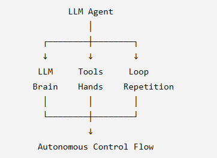
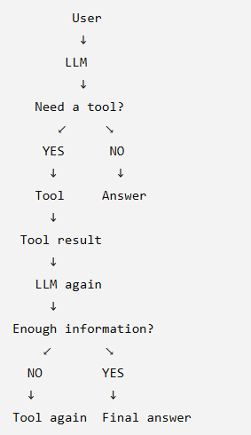
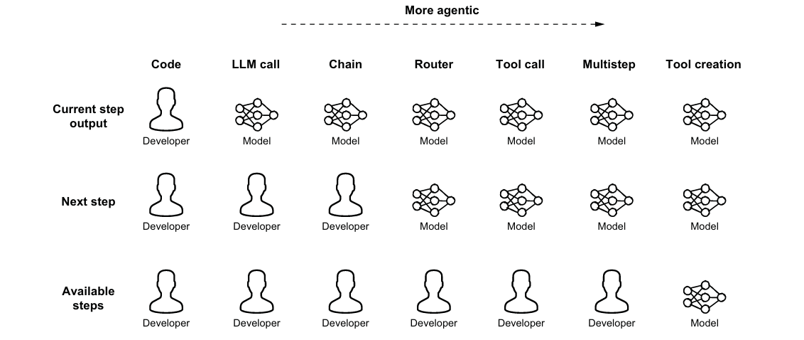

AI agents can be categorized into three main types based on their purpose and functionality:
| Feature | Personal Agent | Customer Agent | Specialized Agent |
|---|---|---|---|
| Main purpose | Helps one person with personal tasks | Helps customers/users interact with a business | Performs a specific expert task |
| Who uses it? | Individual | Many customers | Employees, systems, or other agents |
| Primary goal | Personal productivity | Customer service & business interaction | Solve a narrow/complex problem |
| Knowledge | User preferences, history, calendar, etc. | Company products, policies, customer data | Deep knowledge of one domain/task |
| Examples | Personal AI assistant, travel planner | Banking support agent, airline support agent | Coding agent, SQL agent, research agent |
| Typical tasks | Plan my day, book travel, summarize emails | Check account balance, return a product, track order | Review Java code, analyze SQL, generate a report |
| Personalization | Very high | Medium/high | Usually task-focused |
| Scope | Broad | Broad within a company/customer context | Narrow and deep |
All Agents are powered by LLMs for their decision-making capabilities. Question: What makes a system that predicts the next word capable of completing multistep tasks autonomously? Before we answer that, let’s explore how LLMs can be used to power agents and examine the three essential components that transform an LLM into an agent.
An LLM is a language model trained on nearly all publicly available text from the internet. Although modern LLMs have evolved into multimodal models that process images, audio, and video.
🧩 The core definition (the one you’re looking for)
An LLM agent is a system where the LLM autonomously controls the flow of actions — deciding what to do next, which tools to use, and when to stop — in order to achieve a goal.
| Traditional program | LLM Agent |
|---|---|
| Developer decides what happens next | LLM decides what happens next |
| Flow is hardcoded | Flow can change dynamically |
if → then → function → function |
LLM → Tool → Result → LLM → Tool... |
| Developer knows the steps beforehand | Steps may be unpredictable |
| Usually follows predefined workflow | Can decide when to continue/stop |
User asks:
"Summarize the 2024 Nobel Physics winners' research."
The agent might do:
| Step | What happens | Who decides? |
|---|---|---|
| 1 | Search "2024 Nobel Physics" | 🧠 LLM |
| 2 | Identify Hinton & Hopfield | 🧠 LLM |
| 3 | Search for Hinton's papers | 🧠 LLM |
| 4 | Look at Wikipedia for background | 🧠 LLM |
| 5 | Decide whether enough information exists | 🧠 LLM |
| 6 | Write final report | 🧠 LLM |
The important point is the developer didn't necessarily say:
Search Nobel
→ Search Hinton
→ Search paper
→ Search Wikipedia
→ Write report
Instead, the LLM sees the current context and says:
"I need more information. I'll search for X."
Then it sees the result and decides:
"I need information about Y."
That's autonomous control flow.
The book's idea can be remembered as:

This is the most important part.

So an agent isn't necessarily:
LLM + tool
It's more accurately:
LLM + tools + loop → autonomous control flow
For the research agent:
| Tool | Purpose |
|---|---|
| 🌐 Search | Find current information |
| 📄 Paper search | Find academic papers |
| 📚 Wikipedia | Get background information |
| 💻 Code execution | Analyze data if needed |
| 🗄️ Database | Retrieve structured information |
The LLM doesn't become the tool.
The LLM decides:
"I should use the search tool."
The tool actually performs the search.
Then the result comes back to the LLM.
If you're studying this chapter, I'd memorize this one sentence:
An LLM agent is a program that gives an LLM some control over what happens next.
And the three building blocks are:
🧠 LLM = decides
🔧 Tool = acts
🔄 Loop = keeps the process going
That is the foundation for understanding workflow vs. agent, agent patterns, harnesses, and multi-agent systems later in the book.
A workflow is a developer-controlled execution flow. The developer decides what happens next, which tools to use, and when to stop.
An agent is an LLM-controlled execution flow. The LLM decides what happens next, which tools to use, and when to stop.
The diagram breaks agency into three dimensions:

The levels below move from a fully developer-controlled workflow toward a fully autonomous agent.
| Level | Name | Workflow or Agent? | Definition | Pros | Cons |
|---|---|---|---|---|---|
| 1 | LLM Call | Workflow | A single prompt produces a single response. The developer controls everything. | Simple, predictable, cheap, and easy to debug. | No multi-step reasoning; cannot adapt; limited capability. |
| 2 | Chain | Workflow | Multiple LLM calls arranged in a fixed sequence designed by the developer. | Reliable multi-step processing; focused prompts; deterministic. | Rigid flow; every step must be designed; cannot handle unexpected paths. |
| 3 | Router | Workflow | The LLM chooses among predefined branches based on classification or intent. | Dynamic routing; useful for triage and support; still predictable. | Cannot invent new paths; limited flexibility; options are developer-defined. |
| 4 | Tool Call | Agent (minimal) | The LLM can call one external tool, such as search, code, or a database, without a loop. | Enables real-world actions; more powerful than pure text; good for simple tasks. | Only one tool call; no iterative reasoning; unsuitable for complex tasks. |
| 5 | Multistep Agent Loop | Agent | The LLM repeatedly decides, acts, observes, and repeats until the task is complete. | True autonomy; handles unpredictable complexity; ideal for research and planning. | More expensive; harder to predict; needs guardrails. |
| 6 | Tool Creation | Agent | The LLM creates new tools, usually code, when existing tools are insufficient. | Self-extending abilities; extremely flexible; adapts to new requirements. | High complexity; harder to secure; risk of faulty tool creation. |
| 7 | Full Autonomous Agent | Agent | The LLM controls the entire process: actions, tools, tool creation, and stopping criteria. | Maximum adaptability; end-to-end orchestration; most powerful. | Hardest to control; expensive; requires strong safety constraints. |
The distinction between workflows and agents is not always binary in production systems. Effective architectures often combine both approaches: workflows provide structure and predictability, while agents add flexibility where it is needed.
A common pattern is to design an overall workflow with well-defined stages and implement one or more of those stages as an agent. Consider this document-processing pipeline:
The agent operates freely within its designated stage, making multiple tool calls, following chains of inquiry, and adapting to what it discovers. The overall process still maintains the predictability of a workflow. If the agent fails or produces unexpected results, the workflow can catch them during the quality-review stage.